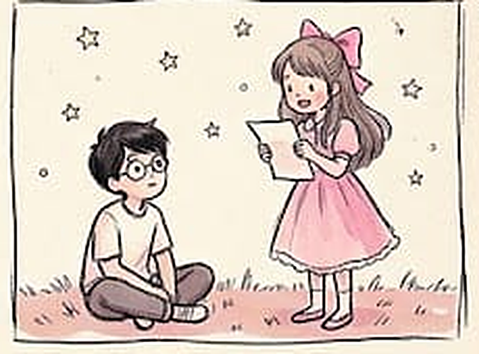

bab tiga
Sajak Perayaan

dibacakan oleh penulisnya
doodle ulang tahun darinya
saat puisinya dibacakan
Hari ini semesta membuka halaman baru kisahku.
Begitu banyak luka yang kusembunyikan di balik senyum.
Semoga di halaman-halaman berikutnya hidup lebih ramah,
yang pergi menemukan jalan untuk tumbuh kembali,
yang kuperjuangkan menemukan rumahnya,
dan yang tulus kulepaskan berhenti menjadi luka.
Itu penggalan puisi ulang tahun yang kamu bacakan untukku. Dengarkan versi suaramu sendiri lewat lagu nomor enam di pemutar album.